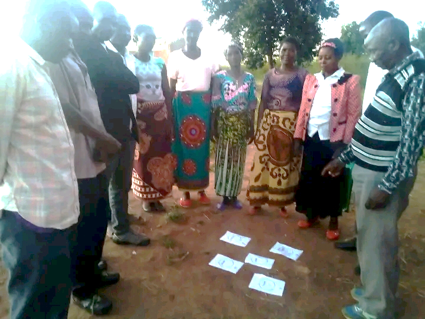

About KEYS
Who we are
KEYS (Knowledge Elders, Youth Share) was envisioned in 2017 and was formally recognized by the Government of Malawi in February 2022. The organization was created around local needs and knowledge systems relating to economic sustainability, agriculture, and climate change. Gender balance and participation across age cohorts are embedded in the infrastructure of the organization. The formal registration solidified KEYS Community Based Organization’s (CBO) commitment to its mission and allowed for increased credibility, access to funding opportunities, and enhanced partnerships with other organizations and stakeholders. KEYS joins together a diverse network of volunteers, local authorities, and stakeholders who share our vision. The community members and stakeholders collectively propose the right projects for building resilience and mitigating the impact of climate change. These efforts are aimed at reducing vulnerability and improving adaptability to climate change for rural people.
KEYS has 73 volunteers who belong to 8 committees. Three of them coordinate the activities of the organization. Volunteering is one of the important ways of the organization to pursue its mission. KEYS has ambitious targets and envisions mobilizing hundreds of multi-talented people each year to team up with other organizations in conserving the environment and valued cultural elements. The organization employs a cultural session approach to promote sharing of information and working relationships between the elders and youth. Together, KEYS committees and the community propose environmentally friendly entrepreneurship to generate income and build resilience. It is KEYS’ hope that bringing elders and youth together will overcome existing economic inequalities and the decay of valued cultural elements through improved relationships and reliance on one another for knowledge, ideas, and talents (youth vs elderly people).
What we aim for
Our collective focus is on the sustainable restoration of natural resources, culture, improved agriculture, and inclusive economic opportunities to create a better world for everyone. We believe in teamwork as the key to unlocking the doors for maximizing results. This drives our passion to safeguard Mother Earth. Implementation of activities incorporates advocacy for cross-cutting issues such as gender mainstreaming, HIV/AIDS, nutrition, income, and food security because they affect all sectors. If these issues are not addressed, the successes in other sectors will not be met. Hence, stressing how our concept of a key for unlocking the doors to understanding and action came into existence. We plan to extend ties beyond to collaborate with a wide range of partners, including enterprise and skills training centers, women’ organizations, and youth organizations. Since its formal registration, KEYS Organization has continued to expand its reach and impact, working tirelessly to fulfill its objectives and make a meaningful difference in the lives of individuals and communities.
Our values and beliefs
KEYS has core values that are fundamental principles or beliefs that guide the actions and behavior of the members and the organization.
We value KISS:
Knowledge is power for changing rural life.
Inclusive economic opportunity.
Sustainable development creates national wealth.
Support is key to the creation of a better world for everyone.
We believe in CAMP:
Creativity brings prosperity.
Action solves a problem.
Mind-set change, tapping into culture and arts, leads to an innovative approach to life challenges.
Poverty can be solved by the communities themselves.

To maximize results, we believe that the preservation and nurturing of culture and environment is possible by bringing the elders, youth, and stakeholders together.
Our sustainability strategy
- Involving traditional leaders, stakeholders, and community members from within the community in selecting leaders of the organization of their choice.
- Creating structures composed of community members which will be linked with existing decentralization committees to woo support.
- Involving stakeholders at all levels of implementation to foster efficiency, transparency, and accountability.
- Establishing online platforms and community-based information resource centers to reinforce sharing of knowledge, skills, and provision of early warnings and awareness to enhance preparedness and response to disasters.
- Establishing and training of Community Fundraising Teams (CFT) to propose projects and oversee income generation projects to bring about self-reliance and sustainability of the organization.
- Organizing Annual Community-Knowledge Sharing Sessions (ACKSS). Participants (community members, stakeholders, and school-going children) will discuss pertinent issues affecting their lives and propose solutions.
- Designing programs and training in environmentally friendly entrepreneurship skills.
- Mentoring school-going children to improve their creativity, confidence, and physical development.
Our objectives
- Promote the growing of drought-tolerant cereals and legumes (nitrogen-fixing plants) and manure usage.
- Facilitate climate-smart agriculture (conservation agriculture) e.g., field mulching technology, etc.
- Promote forest conservation by practicing environmentally friendly entrepreneurship (e.g., solar energy, commercializing cultural heritage, beekeeping, organic vegetable production).
- Organize cultural sessions to facilitate sharing of both indigenous and scientific knowledge for mitigating and adapting to climate change.
- Mobilize and document culturally valued elements to sustainably preserve the environment and support youth socialization.
- Design training programs to stimulate job and wealth creation.
- Offer mentorship and leadership development opportunities for the youth.
- Advocate for social justice and equality through lobbying for policy changes, community engagement, and awareness campaigns.